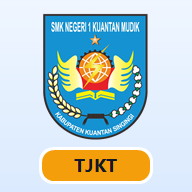

SMKN 1 KUANTAN MUDIK • FASE F
TKJ
Learning
Media Pembelajaran Interaktif TKJ & Fiber Optik
Mulai Belajar
Konsentrasi TKJ
Fiber Optik
Lanjutkan
2
Mapel
22
Topik
59
Perangkat
470
Soal
TKJ Studio
Fase F
Konsentrasi TKJ
Fiber Optik
Offline
Cari materi...
Ctrl K
ESC
↑
↓
Navigasi
Enter
Buka
Esc
Tutup
Beranda
Materi
Topik
Progress